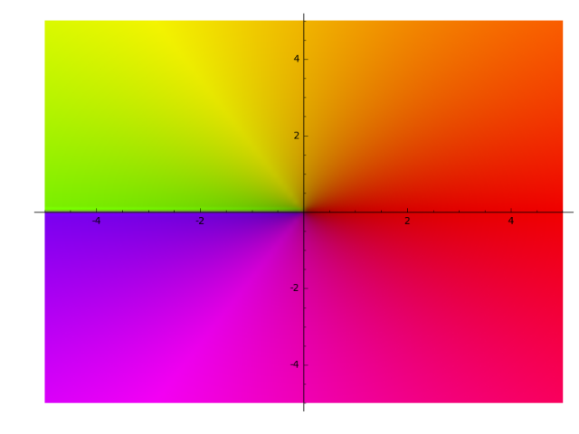
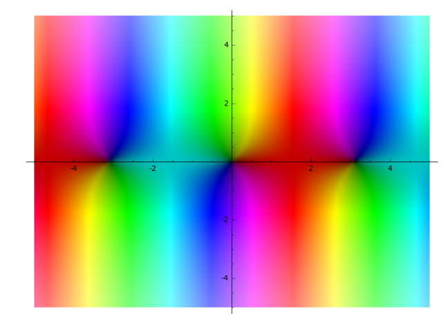
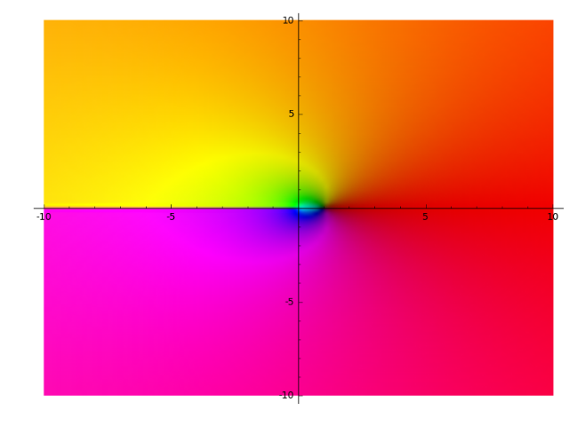
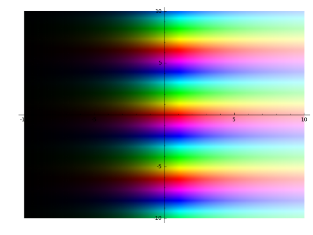
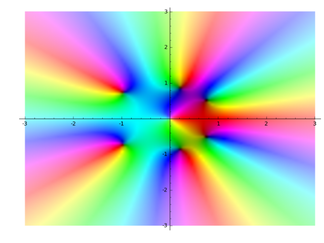
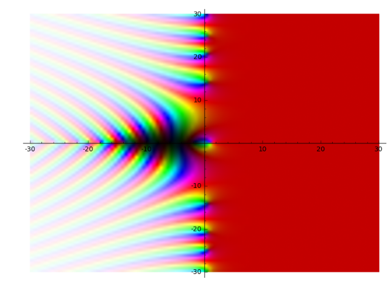

Complex Plots¶
-
class
sage.plot.complex_plot.ComplexPlot(rgb_data, xrange, yrange, options)¶ Bases:
sage.plot.primitive.GraphicPrimitiveThe GraphicsPrimitive to display complex functions in using the domain coloring method
INPUT:
rgb_data– An array of colored points to be plotted.xrange– A minimum and maximum x value for the plot.yrange– A minimum and maximum y value for the plot.
-
get_minmax_data()¶ Returns a dictionary with the bounding box data.
EXAMPLES:
sage: p = complex_plot(lambda z: z, (-1, 2), (-3, 4)) sage: sorted(p.get_minmax_data().items()) [('xmax', 2.0), ('xmin', -1.0), ('ymax', 4.0), ('ymin', -3.0)]
-
sage.plot.complex_plot.complex_plot(f, xrange, yrange, plot_points=100, interpolation='catrom', **options)¶ complex_plottakes a complex function of one variable, \(f(z)\) and plots output of the function over the specifiedxrangeandyrangeas demonstrated below. The magnitude of the output is indicated by the brightness (with zero being black and infinity being white) while the argument is represented by the hue (with red being positive real, and increasing through orange, yellow, ... as the argument increases).complex_plot(f, (xmin, xmax), (ymin, ymax), ...)INPUT:
f– a function of a single complex value \(x + iy\)(xmin, xmax)– 2-tuple, the range ofxvalues(ymin, ymax)– 2-tuple, the range ofyvalues
The following inputs must all be passed in as named parameters:
plot_points– integer (default: 100); number of points to plot in each direction of the gridinterpolation– string (default:'catrom'), the interpolation method to use:'bilinear','bicubic','spline16','spline36','quadric','gaussian','sinc','bessel','mitchell','lanczos','catrom','hermite','hanning','hamming','kaiser'
EXAMPLES:
Here we plot a couple of simple functions:
sage: complex_plot(sqrt(x), (-5, 5), (-5, 5)) Graphics object consisting of 1 graphics primitive
sage: complex_plot(sin(x), (-5, 5), (-5, 5)) Graphics object consisting of 1 graphics primitive
sage: complex_plot(log(x), (-10, 10), (-10, 10)) Graphics object consisting of 1 graphics primitive
sage: complex_plot(exp(x), (-10, 10), (-10, 10)) Graphics object consisting of 1 graphics primitive
A function with some nice zeros and a pole:
sage: f(z) = z^5 + z - 1 + 1/z sage: complex_plot(f, (-3, 3), (-3, 3)) Graphics object consisting of 1 graphics primitive
Here is the identity, useful for seeing what values map to what colors:
sage: complex_plot(lambda z: z, (-3, 3), (-3, 3)) Graphics object consisting of 1 graphics primitive

The Riemann Zeta function:
sage: complex_plot(zeta, (-30,30), (-30,30)) Graphics object consisting of 1 graphics primitive
Extra options will get passed on to show(), as long as they are valid:
sage: complex_plot(lambda z: z, (-3, 3), (-3, 3), figsize=[1,1]) Graphics object consisting of 1 graphics primitive
sage: complex_plot(lambda z: z, (-3, 3), (-3, 3)).show(figsize=[1,1]) # These are equivalent
sage: complex_plot(sqrt, (-5, 5), (-5, 5)) Graphics object consisting of 1 graphics primitive
-
sage.plot.complex_plot.complex_to_rgb(z_values)¶ INPUT:
z_values– A grid of complex numbers, as a list of lists
OUTPUT:
An \(N \times M \times 3\) floating point Numpy array
X, whereX[i,j]is an (r,g,b) tuple.EXAMPLES:
sage: from sage.plot.complex_plot import complex_to_rgb sage: complex_to_rgb([[0, 1, 1000]]) array([[[ 0. , 0. , 0. ], [ 0.77172568, 0. , 0. ], [ 1. , 0.64421177, 0.64421177]]]) sage: complex_to_rgb([[0, 1j, 1000j]]) array([[[ 0. , 0. , 0. ], [ 0.38586284, 0.77172568, 0. ], [ 0.82210588, 1. , 0.64421177]]])